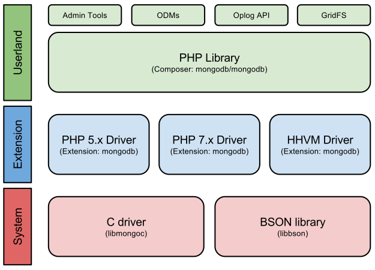

NoSQL - MongoDB
by Nikolay Dobromirov
 ### Some history
- FFW PHP Team Lead (Sofia office).
- PHP developer for the last 9-10.
### On the web...
- drupal.org - https://www.drupal.org/u/ndobromirov
- GitHub - https://github.com/ndobromirov
### Interests
- System design and architecture.
- System & code **performance**.
- New technologies
- Games: *Diablo 2*, *Starcraft: BroodWar*
- Movies
### About you
- Any NoSQL experience?
- Any SQL experience? **:]**
- Memcached, Redis (K/V)
- Solr, ElasticSearch (documents)
- Graphs...
- Others?
### What is MongoDB
```
MongoDB is an open-source document database that is highly
performant, highly availabille and horizontaly scallabile.
```
### Breaking this down...
- Document database
- Highly performant
- Highly availabile
- Horizontaly scallable
*... Enough teasers :D*
### Some history
- FFW PHP Team Lead (Sofia office).
- PHP developer for the last 9-10.
### On the web...
- drupal.org - https://www.drupal.org/u/ndobromirov
- GitHub - https://github.com/ndobromirov
### Interests
- System design and architecture.
- System & code **performance**.
- New technologies
- Games: *Diablo 2*, *Starcraft: BroodWar*
- Movies
### About you
- Any NoSQL experience?
- Any SQL experience? **:]**
- Memcached, Redis (K/V)
- Solr, ElasticSearch (documents)
- Graphs...
- Others?
### What is MongoDB
```
MongoDB is an open-source document database that is highly
performant, highly availabille and horizontaly scallabile.
```
### Breaking this down...
- Document database
- Highly performant
- Highly availabile
- Horizontaly scallable
*... Enough teasers :D*
SQL (similarities)
| MySQL |
| |
MongoDB |
| Database |
| |
Database |
| Table |
| |
Collecction |
| Row |
| |
Document |
| Column* |
| |
Property |
| Result set |
| |
Cursor |
### SQL (diffs)
- ACID - compromises
- Data storage (BSON) - async
- Schema management (implicit)
### Documents
```json
{
"_id" : ObjectId("5902297a258336daeccfaefd"),
"property1" : 1,
"property2" : "numer 2",
"property3" : ["a", "list", "of", "strings" ],
"property4" : ISODate("2017-04-27T17:25:14.337Z"),
"property5" : {
"another" : "object",
"that" : "can",
"contain" : "anything"
}
}
```
### Object ID (12 bytes)
- 4-byte value unix timestamp,
- 3-byte machine identifier,
- 2-byte process id, and
- 3-byte counter (first is random)
Example: **5902297a258336daeccfaefd**
... When storing MongoDB IDs - use **THIS** not strings!
### Other types
- Dates
- Strings
- Integrs
- Arrays
- Objects
- ...[and many more](https://docs.mongodb.com/v3.0/reference/bson-types/)
Recommended PHP extension
